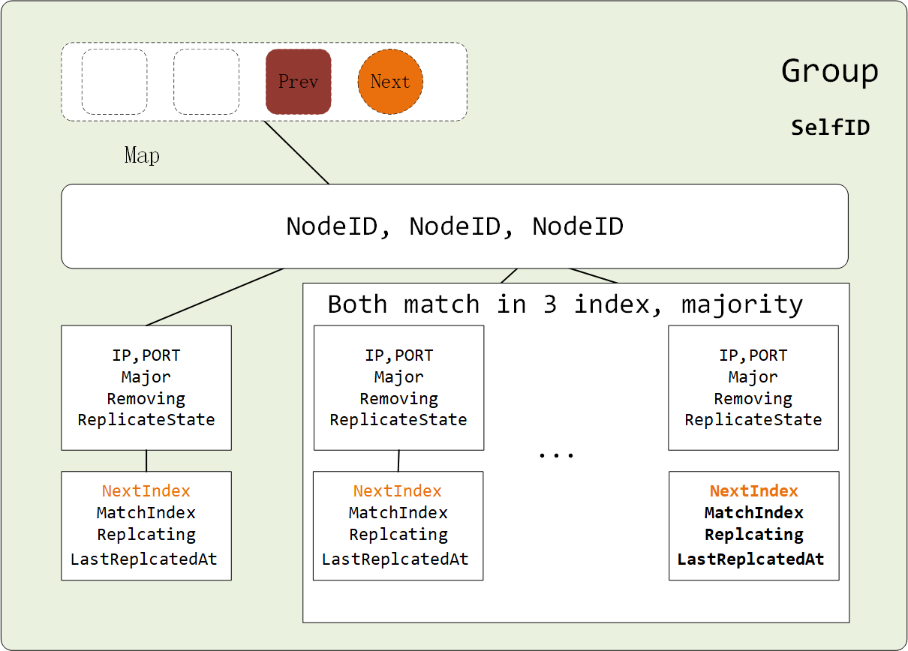
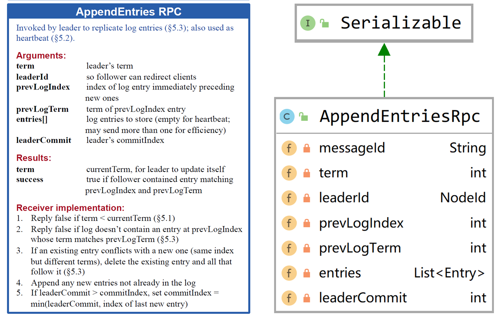

ReplicateLog
ReplicateLog是整个Raft中的关键地方.所有的信息都是通过AppendEntries的方式通知到所有节点.
1 | private void doReplicateLog() { |
Entry包括几种信息:
no-op. 存粹的心跳.
普通信息. curd
配置信息. 整个集群的配置.
NoOpEntry
普通的心跳信息，当节点当选Leader之后。没有Client的数据请求， Leader需要和Follower保证相互之间是活着的。Leader将一直发送该消息。
GeneralEntry
create and send
这个通过GenerEntry让节点之间保持最终一致性.
每个节点都是有Log信息的，画了一个简图：
我们可以看到一个Sequence，保存着所有的Entry。每个Entry中存有三大件 Kind ， Index ， Term. LogReplicate 就是根据 index 和 Term来进行判断的。Snapshot是在某个时候的数据快照。帮忙节点快速恢复数据。最后将数据提交到State machine。 下面哪个空白的是ConfigChangeLog.
那么给Follower发送些什么数据呢->这就要根据Leader节点记录的每一个Follower信息了。
- Group

当前Leader中的Follower信息.Follower的地址,是否删除, 是否正在复制.还有比较关键的就是 NextIndex和 MatchIndex.
Follower通过比较Log的nextLogIndex, 和 GroupMember的 NextIndex.来决定发送的数据.
1 | public AppendEntriesRpc createAppendEntriesRpc(int term, NodeId selfId, int nextIndex) { |
值得注意的是： Leader 根据每个member的信息不同是发送的不同的数据。
snapshot.LastIndex > member.nextIndex
member的nextIndex比我快照的最后**Index**都小,那么肯定是首先发送一个快照信息给member
leader.nextlogindex > member.nextIndex
leader的nextLogindex 大于member的index 这是最常规的.所以将Leader比member新的部分(subSequence)添加到AppendEntries里面。
知道什么时候发送些什么之后我们再来看看AppendEntries本身应该发送些什么数据。在论文中我们可以看到

preLogIndex 和 prevLogTerm：他们用于和Follower进行日志的配置。
leaderCommit 将 Follower的Commit更新，避免Leader还没有Commit，Follower就Commit了
entries 自然就是Leader的角度看 Follower 所需要的信息。
receive and reply
1 | AppendEntriesRpc rpc = rpcMessage.get(); |
- rpc.Term < role.Term 任期不同请求来的Term没有我本身的Term大呢. 将单前节点的Term发送回去。
- rpc.Term > role.Term 任期不同比我的任期大,肯定是我的leader. 根据来的信息进行数据更新, 返回更新结果。
- rpc.Term = role.Term 根据当前节点的角色不同 （Follower 和 Candidate），根据来的信息进行数据更新返回更新结果。
值得注意的， 节点在收到消息之后角色为（Follower 和 Candidate）都会重置 ElectionTimeout。
节点的数据同步
当然所有数据也是通过节点的Log首先commit， 然后根据Leader的(apply)commitIndex， 进行apply.
- 首先判断rpc.prevLogIndex rpc，prevLogTrem与当前节点的Index是否能够匹配的上。及查询当前节点是否有prevLogIndex数据-> 1.根据快照 2. 更具log序列获取。
- 确保当前节点存在pervLog数据时， 删除Follower的未匹配（followerEntryMeta.Term() != leaderEntry.Term()）节点。
- 为当前节点log 添加新的节点信息同样如果是ConfigChange信息将会特别的添加到ConfigList
appendEntriesResult
- 在上述 rpc.Term < role.Term的时候我们返回回来的Term，因为 Leader遇到了更大的Term，所以变为Follower
- 检测当前节点角色.如果以及不是leader了那就没有必要处理result
- 根据返回消息的节点获取Leader中保存的member信息， member被删除了或者不是major的一员就不用处理。
- 返回消息是成功的话，将Leader的member信息更新， 并且根据Group中超过半数匹配的Index进行apply，到状态机。
- 继续doReplicateLog
GroupConfigEntry
这一部分留到改变配置的时候再做详细的分析。